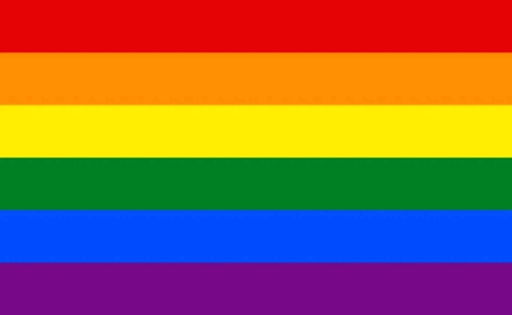

Giving Back
Toronto Cupcake works with many neighbourhood and community organisations in the GTA. Since opening in 2010, Toronto Cupcake has been willing to assist by donating cupcakes, time, and caring to many charitable causes.
Community
Toronto Cupcake supports neighbourhood organizations, charitable causes, International Women's Day, Pride, and MMIW awareness.


Native page content
Toronto Cupcake works with many neighbourhood and community organisations in the GTA. Since opening in 2010, Toronto Cupcake has been willing to assist by donating cupcakes, time, and caring to many charitable causes.
Toronto Cupcake acknowledges that Toronto and Toronto Cupcake are in the "Dish With One Spoon" territory. The Dish With One Spoon is a treaty between the Anishinaabe, Mississaugas, and Haudenosaunee that bound them to share the territory and protect the land. Subsequent Indigenous Nations and peoples, Europeans, and all newcomers have been invited into this treaty in the spirit of peace, friendship, and respect.
To learn more about about Dish with One Spoon head over here.
Recognize and celebrate the achievements of women around the world on International Women's Day.
Here are some important facts from multiple websites:
International Women’s Day (IWD) is celebrated globally on March 8th to recognize the social, economic, cultural, and political achievements of women.
The first IWD gathering was held in 1911, supported by over a million people in Austria, Denmark, Germany, and Switzerland.
IWD is not specific to any country, group, or organization—it's a collective day of global celebration and a call for gender parity.
Each year, IWD is marked by a specific theme to highlight a relevant issue affecting women worldwide. The 2024 theme is "Equality for All" (example theme, you may want to update this).
Events such as rallies, networking events, performances, and fundraising initiatives are held worldwide to celebrate the day and advocate for gender equality.
Learn more about International Women’s Day at these websites:
Show the colours and glitter! This is PRIDE month.
Here are some important facts from multiple websites:
The LGBTQ community celebrates in a number of different ways across the globe. Various events are held during this special month as a way of recognising the influence LGBTQ people have had around the world.
June was chosen because it is when the Stonewall Riots occurred in NYC, back in 1969.
In 1970, the first Gay Day picnic was held in Toronto, which eventually gave way to the Pride Parade and Pride Month.
The 2019 Toronto Pride Parade had over 1 million people in attendance. COVID put a damper on the Parade in 2020 and 2021, but we hope 2022 will bring out even more supporters and celebrators of the LGBTQ community.
Pride Month is also an opportunity to peacefully protest and raise political awareness of current issues facing the community.
Learn more about Pride Month at these websites:
Here are some important facts from the Assembly of First Nations:
Indigenous women make up 16% of all female homicide victims, and 11% of missing women, even though Indigenous people make up only 4.3% of the population of Canada.
Violence against Indigenous women and girls is systemic and a national crisis that requires urgent, informed, and collaborative action.
Indigenous women are three times more likely than non-Indigenous women to be victims of violence.
Public data on MMIWG oversimplifies and underrepresents the scale of the issue, yet still shows a complex and pervasive pattern of violence against Indigenous women and girls.
The 2014 RCMP Overview notes that police recorded 1,017 incidents of Aboriginal female homicides between 1980 and 2012, along with 164 missing Aboriginal female investigations dating back to 1952. Reports indicate the numbers are likely higher.
From 2001 to 2014, the average rate of homicides involving Indigenous female victims was four times higher than that of non-Indigenous female victims.
Learn more about MMIW at these resources:
Ready when you are